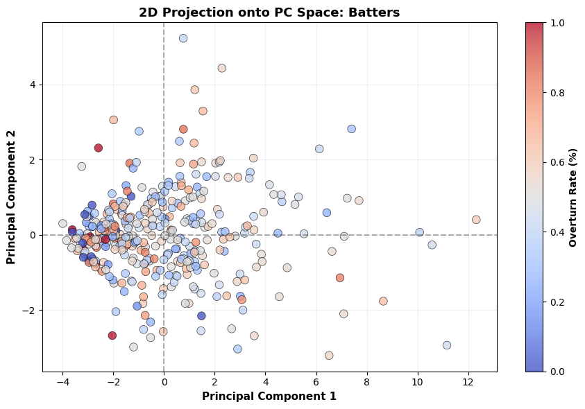
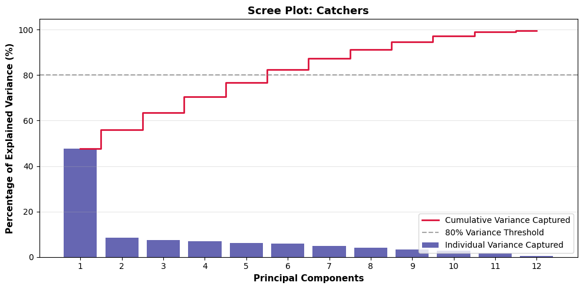
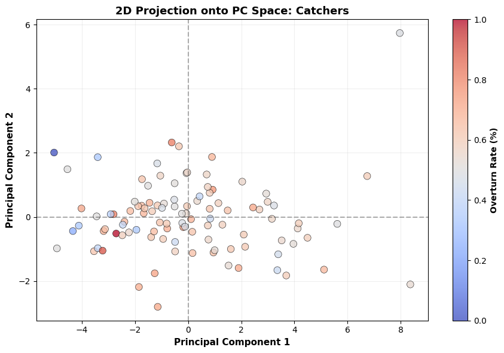

Overview
Principal Component Analysis (PCA) serves as a foundational unsupervised linear transformation technique designed to simplify high-dimensional datasets by projecting multi-variable instances onto a set of brand new, uncorrelated coordinate axes called principal components. At the absolute structural heart of this dimensionality reduction framework sit two core linear algebra entities: eigenvectors and eigenvalues. When a dataset's multi-dimensional covariance matrix is computed, eigenvectors dictate the directional orientation and geometric tilt of the new orthogonal axes. As conceptually visualized in Figure 1, the red arrow representing Principal Component 1 (PC1) is the dominant eigenvector that rotates to align directly with the maximum variance of the point cloud, while the blue arrow representing Principal Component 2 (PC2) is a secondary eigenvector fixed at a strict right angle to capture the remaining orthogonal spread. Paired alongside these directional vectors, eigenvalues serve as scalar multipliers that quantify the absolute magnitude of variance captured along each PC. By calculating these values, the algorithm determines the informational importance of each component, enabling analysts to retain axes with large eigenvalues while discarding those with low values that contain negligible data variation.

High-dimensional tracking data frequently suffers from the "curse of dimensionality," an analytical phenomenon where sparse data spaces, data redundancy, and multi-collinear variables degrade statistical modeling performance and make clean visualization impossible. When a dataset contains dozens of closely correlated metrics, distances between individual observations become distorted, and identifying genuine underlying behavioral patterns becomes exceedingly difficult. Reducing the dimensionality of the data addresses these systemic challenges by compressing overlapping, repetitive variables into a highly condensed, low-dimensional coordinate plane. As illustrated in the orthogonal projection mechanism of Figure 2, this geometric compression flattens the cloud down onto an optimized coordinate line, filtering out background noise and retaining major variance patterns without losing vital structural information. This simplification effectively preserves the macro-level relationships of the data points, enabling clear, low-dimensional plotting and more efficient subsequent modeling.

Within the scope of this research project, PCA is specifically deployed to synthesize and streamline 15 highly collinear situational challenge rate features engineered during data preparation into two discrete, low-dimensional dimensions: Principal Component 1 and Principal Component 2. Because a player's challenge tendencies across the selected situational rate features are heavily interdependent, evaluating all 15 features simultaneously introduces immense multi-collinear inflation. Utilizing PCA to collapse these overlapping splits transforms a massive, uninterpretable matrix of fractional metrics into two clear, orthogonal behavioral axes. This spatial compression provides powerful analytical benefits, providing a clean 2D eigenvector canvas to plot individual athletes, uncovering the primary hidden variables driving automated strike-zone challenge strategy, and creating optimized, decorrelated feature sets to feed into subsequent machine learning classifiers without the risk of overfitting.
Data Prep
Features are continuous, normalized via Z-scores, and filtered using a minimum challenge opportunity threshold of 100 to isolate robust situational tracking rates for batters and catchers. Target performance fields are withheld during the fit to ensure structural habits drive the projections. Access full datasets via the project repository links.
Dataset Links:
- Full-Season Batting Splits CSV: MLBData-ABSSituationalSplits-Batters-FullSeason.csv
- Full-Season Catching Splits CSV: MLBData-ABSSituationalSplits-Catchers-FullSeason.csv


Code
Results
Batter PCA Results
Principal Component Analysis on the batter dataset reveals that PC1 captures a dominant 46.52% of the total variance. A sharp drop-off occurs with PC2, which accounts for just 8.58% of the variance. The scree plot indicates that the first six PCs are required to reach the 80% cumulative variance threshold. PC1 functions as a Global Aggression Index with positive weights across baseline metrics like the 2 Challenges Left Rate (0.349) and Fastball Rate (0.347), while PC2 acts as a Remaining Resource Leverage Axis, heavily weighting the 1 Challenge Left Rate (0.469).
When mapped onto a 2D PC plane, these top two dimensions track a total combined variance of 55.10% across the player base. While the scree plot confirms that the first six PCs are required to capture the full 80% cumulative threshold, the 2D scatter projection (Figure 6) provides critical visual evidence regarding strategic trends.
The data points within this 2D space are color-coded by the players' overturn rates to observe if dimensional shifts correlate with review precision. An empirical evaluation of this color gradient reveals a completely homogenous blending and random dispersal of success percentages across both axes. The total lack of color-coded clustering or vertical spatial gradients mathematically demonstrates that real-world challenge success is decoupled from an individual batter's underlying tactical aggression index (PC1) or situational leverage shifts (PC2). This lack of spatial alignment validates prior partitional clustering discoveries, proving that high-volume challenge deployment does not dilute or improve review efficiency or overall accuracy.

Batter PC Loadings Table
An evaluation of the calculated feature loadings for the batter dataset reveals the underlying variables driving player strategy variance. PC1 functions as a Global Aggression Index, characterized by strong, uniform positive weights across nearly all situational metrics. The heaviest loadings exist on the baseline 2 Challenges Left Rate (0.349) and Fastball Rate (0.347), indicating that PC1 primarily captures an athlete's baseline risk tolerance and general willingness to challenge pitches. Conversely, PC2 operates as a Remaining Resource Leverage Axis. It is dominated by a massive positive weight for the 1 Challenge Left Rate (0.469) contrasted against heavy negative weights for 2 Challenges Left (-0.303) and Extra Innings, 2 Challenges Left rates (-0.362). This mathematical contrast isolates a strategic shift in leverage, separating hitters who maintain context-independent, uniform aggression from those who selectively adjust their trigger tendencies based on diminishing team review resources.
| Feature Metric | PC1 Weight | PC2 Weight |
|---|---|---|
| 2 Challenges Left Rate | 0.349 | -0.303 |
| Fastball Rate | 0.347 | -0.099 |
| Home Venue Rate | 0.341 | -0.014 |
| Away Venue Rate | 0.340 | -0.051 |
| 1 Challenge Left Rate | 0.304 | 0.469 |
| Breaking Ball Rate | 0.289 | 0.070 |
| Innings 4-6 (2 Challenges Left) | 0.278 | -0.186 |
| Innings 1-3 (2 Challenges Left) | 0.276 | -0.235 |
| Innings 7-9 (1 Challenge Left) | 0.258 | 0.290 |
| Innings 7-9 (2 Challenges Left) | 0.221 | -0.259 |
| Innings 4-6 (1 Challenge Left) | 0.194 | 0.359 |
| Offspeed/Other Rate | 0.134 | 0.081 |
| Innings 1-3 (1 Challenge Left) | 0.099 | 0.382 |
| Extra Innings (2 Challenges Left) | 0.089 | -0.362 |
| Extra Innings (1 Challenge Left) | 0.088 | 0.131 |
Catcher PCA Results
For the catcher dataset, PC1 captures 47.59% of the total variance. A massive drop-off follows as PC2 accounts for only 8.42% of the spread. Similar to the batter analysis, the scree plot indicates that the first six PCs are required to successfully reach the 80% cumulative threshold. PC1 serves as a Global Aggression Index, while PC2 acts as an Inning Context and Leverage Axis defined by weights for early and late inning challenge rates.

Projecting the catcher dataset onto the 2D coordinate plane accounts for a total combined variance of 56.01% between the two dominant eigenvectors. Although six total principal components are required to successfully reach the 80% cumulative variance threshold across the complete scree plot, the first two dimensions effectively isolate the primary behavioral variations of the catching cohort.
Evaluating the color-coded breakdown of catcher overturn rates within this two-dimensional projection (Figure 8) uncovers a matching random distribution. The success colors are evenly mixed throughout both the conservative and aggressive coordinate fields, showing no defined zones of high or low success. This spatial independence indicates that a catcher's dimensional positioning—whether driven by global trigger rates on fastballs or situational timing thresholds—has no statistically significant impact on ABS challenge success. These findings reinforce the macro-level conclusion that arbitrated challenge outcomes are governed by discrete pitch placement and human umpire blind spots rather than the overarching behavioral profiles of players.

Catcher PC Loadings Table
Analyzing the calculated eigenvector weights for the catcher dataset uncovers a matching structural paradigm within defensive challenge strategies. PC1 serves as a Global Aggression Index, exhibiting highly consistent, positive loadings across almost all tracking metrics. The highest alignment weights are concentrated on the baseline 2 Challenges Left Rate (0.346) and Fastball Rate (0.337), illustrating that the primary axis of variance simply ranks catchers by their macro-level challenge deployment volume. In contrast, PC2 functions as an Inning Context and Leverage Axis. This dimension is mathematically defined by heavy positive loadings for the 1 Challenge Left Rate (0.397), particularly in early (0.514) or late (0.439) inning situations, which are explicitly polarized against negative weights for late-innning situations with both challenges remaining. This linear transformation effectively separates conservative catchers who protect their review resources early in games from those who exhibit heightened context-dependent aggression under high-leverage defensive pressure.
| Feature Metric | PC1 Weight | PC2 Weight |
|---|---|---|
| 2 Challenges Left Rate | 0.346 | -0.239 |
| Fastball Rate | 0.337 | 0.072 |
| Away Venue Rate | 0.336 | 0.064 |
| Home Venue Rate | 0.334 | -0.148 |
| 1 Challenge Left Rate | 0.306 | 0.397 |
| Innings 4-6 (2 Challenges Left) | 0.285 | -0.276 |
| Innings 1-3 (2 Challenges Left) | 0.267 | -0.040 |
| Innings 7-9 (1 Challenge Left) | 0.256 | 0.439 |
| Breaking Ball Rate | 0.254 | -0.110 |
| Innings 7-9 (2 Challenges Left) | 0.253 | -0.239 |
| Innings 1-3 (1 Challenge Left) | 0.185 | 0.514 |
| Innings 4-6 (1 Challenge Left) | 0.176 | -0.222 |
| Offspeed/Other Rate | 0.171 | -0.197 |
| Extra Innings (2 Challenges Left) | 0.083 | -0.019 |
| Extra Innings (1 Challenge Left) | 0.036 | 0.248 |
Conclusions
The analysis shows that PC1 captures close to half the variance across both datasets, followed by a huge drop-off in variance captured by PC2. While six PCs are required to reach the 80% threshold, the dominance of PC1 confirms that overall player behavior is primarily driven by general challenge frequency and risk tolerance rather than isolated situational factors.
An empirical cross-evaluation between the batter and catcher PC loadings tables reveals surprisingly uniform structural outcomes within the first PC, establishing a shared behavioral paradigm across both datasets. Most notably, the exact same five situational metrics—the baseline 2 Challenges Left Rate, Fastball Rate, Home Venue Rate, Away Venue Rate, and baseline 1 Challenge Left Rate—emerge as the absolute heaviest positive loading constraints for PC1 across both the batters and catchers. Because these specific variables consistently command the highest eigenvector alignment weights regardless of the player's position, it becomes mathematically evident that these features function as the primary baseline indicators of macro-level challenge deployment volume. The uniform structural behavior of these features proves that the dominant dimension of variance in the ABS Challenge System is entirely governed by a universal, sport-wide index of tactical risk tolerance and general aggression rather than distinct positional biases.